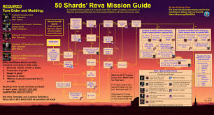

Tatooine Fleet CM
Enemies:
Chimera, Tie Advanced X1, Tie Fighter, Tie Bomber
Reinforcements: Tie Interceptor
Glossary
Auto
Executor [95%]
S: Hounds Tooth, Razor Crest, Xanadu Blood
R: Slave 1, Ig-2000
Tatooine Open CM
Enemies:
Wave 1: Sand Trooper Commander, Sandtrooper Scout [x2], Sandtrooper [x2]
Wave 2: Imperial Officer, Sand Trooper Commander, Sandtrooper Scout [x2], Sandtrooper [x2]
Glossary
Manual
Trench
Jango Fett, Wat, Count Dooku, Nute Gunray
Auto
Mother Talzin [100%]
Old Daka, Asajj Ventress, Nightsister Zombie, Merrin
Hera [100%]
Captain Rex, Kanan Jarrus, Chopper, Sabine
Cere [100%]
Baby Cal/Kelleran Beq/Jedi Knight Cal Kestis/General Anakin
Tatooine Fennec CM
Enemies:
Wave 1: Tusken Elder, Tusken Brute, Tusken Chieftan, Tusken Raider [x2]
Wave 2: Tusken Elder, Tusken Chieftan, Tusken Brute, Tusken Raider [x2]
Glossary
Auto
Rey [100%]
Fennec, + 3 LS [use Resistance for ease]
Tatooine Jabba CM
Enemies:
Wave 1: Pirate Leader, Pirate Enforcer, Pirate Saboteur, Pirate Bruiser, Pirate Spy
Wave 2: Hondo, Pirate Enforcer, Pirate Saboteur, Pirate Bruiser, Pirate Spy
Note:
The Jabba CM on Tatooine is so beyond brain dead easy that Jabba can quite literally solo the event at relic 7 [with mediocre mods] without his ult, while on auto.
Due to Jabba's middle special dispel, his GL Unique, and the planet modifier granting DOTS to all characters on the field, Jabba outlasts enemy teams, as they effectively kill themselves over time.
Using Jabba's typical team [Skiff, Boussh, Krrsatan, +1] will speed up the battle, but any allies to fill slots will complete the mission.
Reva SM
Enemies:
Wave 1: Chief Nebit, Jawa Scavenger, Jawa Engineer, Jawa, Datcha
Wave 2: Jedi Master Kenobi
Note: An additional Pirate will spawn if platoons are not completed. Modding and turn order is CRITICAL. Please read the modding and strategy in the graphic
Glossary
Manual
Grand Inquisitor [No Platoons]
Ninth Sister, Second Sister, Seventh Sister, Fifth Brother
Ninth Sister, Second Sister, Fifth Brother, Eight Brother [90%]
Seventh Sister, Fifth Brother, Ninth Sister, Marrok [95%]
Tatooine Krayt/Mandalore SM
Enemies:
It’s a Damn Krayt Dragon
Glossary
Manual
Bo Katan [Mandalore]
Ig-12/Grogu, Beskar Mando [90%]
Bo needs 70k+ health, 270+ speed, and as much offense as possible.
BAM needs 240+ speed, then as much defense and health as possible. Defense sets with health primaries are GOAT.
IG/Paz. Either can be used. Aim for 140k+ health, 65% armor, 270+ speed.
Start using Bo's 1st special, then the second. Start BAM using his first special. Second special should ONLY be used in critical situations.